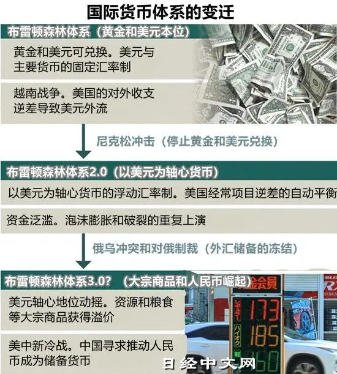

收录于合集

导读
2月26日，欧美6国发表联合声明，宣布禁止俄罗斯的几家主要银行使用SWIFT国际结算系统，俄持有的外汇储备被冻结。这种将美元“武器化”的行为引发多国担忧，一些担心美国没收美元资产的国家开始寻找替代美元的资产。 对此不少人认为，这将导致世界经济和政治格局以及国际货币体系发生重大变革。瑞信银行的利率战略负责人Zoltan Pozsar提出，一个基于黄金和大宗商品的“布雷顿森林体系3.0”正在到来。
中国银行原副行长，中国人民大学重阳金融研究院高级研究员王永利认为， 所谓的“布雷顿森林体系3.0”不可能实现，国际货币体系再也不可能倒退回以黄金或其他任何物品作为本位制的体系。信用货币的出现，彻底打破了实物货币对货币供应的束缚，使货币能够充分满足社会需求。 货币从实物货币发展成为信用货币的规律表明，回归黄金货币的思路难以保持货币总量与财富价值相对应的基本要求，必然陷入严重通货紧缩的困境，并严重阻碍经济社会发展。
因此，当前这场围绕全球货币体系“去美元化”的讨论，方向不应是以实物货币替代信用货币，或是设想一套“超主权世界货币”。 在国家主权独立，全球尚未实现一体化治理的背景下，国家主权和法律保护，仍是货币与财富最高等级的信用保护。当前国际货币体系的变革，只能在国家或区域主权货币基础上推进。欧亚系统科学研究会特编发此文，供读者思考。文章原刊于“人大重阳”。仅代表作者本人观点。
布雷顿森林体系崩溃已过去50年，但人们对其崩溃的根源依然存在很大争议，甚至依然有人认为将出现以黄金和其他大宗商品作为支撑的“新布雷顿森林体系”。然而， 恰恰是固守金本位制，才是布雷顿森林体系必然崩溃的根本原因。
信用货币的出现，彻底打破了实物货币对货币供应的束缚，使货币能够充分满足社会需求，理论上更有利于保持货币总量与财富价值的基本对应，维持货币币值的基本稳定，充分发挥货币作为价值尺度本质功能，推动货币金融快速发展，促进经济社会进步。可以说，没有信用货币的出现，全球经济社会发展根本无法达到今天的水平。
可以肯定，未来世界经济和政治格局以及国际货币金融体系将深刻变革，但所谓的“布雷顿森林体系3.0”却不可能实现，国际货币体系再也不可能倒退回以黄金或其他任何物品作为本位制的体系。 经济全球化发展，需要有与之配套的全球一体化治理体系。在没有实现全球一体化治理的情况下，国际货币体系的变革，只能在国家或区域主权货币基础上推进。
近日，俄乌局势紧张后，美国及其盟友对俄罗斯实施力度空前的制裁，包括冻结在这些国家的俄央行官方储备资产、实体或个人的私有资产，甚至将俄罗斯部分银行“踢出”SWIFT系统。由此，不少人认为，这将导致世界经济和政治格局以及国际货币体系发生重大变革，推动新兴市场脱离以美元为中心的国际货币体系。瑞士信贷集团利率策略师Zoltan Pozsar更是发布公告认为， 基于黄金支持的布雷顿森林体系Ⅰ前期已被基于内部货币（美国国债）的布雷顿森林体系Ⅱ所取代，但在俄罗斯的外汇储备被冻结后，布雷顿森林体系Ⅱ的基础就崩塌了 ，接下来将转化为基于外部货币（黄金和大宗商品）的布雷顿森林体系Ⅲ，全球货币体系将与从前大不相同。这一说法得到广泛传播、产生了很大共鸣。
但是，国际货币体系真的会出现“布雷顿森林体系Ⅲ或3.0”吗？
这可能完全是一种不切实际的幻想！

“布雷顿森林体系3.0”的设想。图源：日经中文网
01
布雷顿森林体系的背景与本质
布雷顿森林体系本质上仍是坚持“金本位制”，只是将国家货币的金本位制上升到国际货币体系，并建立了一定程度的国际维稳机制，在实质上并未实现货币体系根本性突破。
二战爆发后，参战各方巨大的战争消耗以及相互之间的经济封锁与资产扣压，造成这些国家出现严重通胀、本币汇率波动剧烈。原本以英镑为中心的国际货币体系陷入瘫痪，严重影响了国际经贸往来。 其中，美国依托其独一无二的国家治理体系和远离战火的地理位置，吸引大量国际资本、产能和人才流入，推动其对外贸易高速发展，黄金储备急速增长。 但是，大量的黄金交割不仅成本高、效率差，而且进一步加剧贸易失衡下的黄金失衡，引发更加深刻的经济社会问题，因此亟须建立和完善新的国际货币体系。
正因如此，经过一段时间的酝酿，在二战尚未结束的1944年7月，44个主要国际贸易国在远离战火的美国布雷顿森林度假区举行“联合国家货币金融会议”并签订了布雷顿森林协议，确定美元与黄金固定挂钩，其他国家货币与美元相对固定挂钩，并且相应成立“国际货币基金组织”（IMF）和“国际复兴开发银行”（世界银行，WB），分别负责向成员国提供短期资金支持以保障汇率体系的稳定，以及提供长期信贷来促进世界经济的复苏和发展。由此形成了国际货币的“布雷顿森林体系”。
布雷顿森林体系的建立和运行极大地解决了国际经贸往来中货币汇率严重不稳定，以及黄金支付成本高、效率低等问题，在推动国际经贸往来加快发展等方面，发挥出非常重要的作用。 但这一体系本质上仍是坚持“金本位制”，只是将国家货币的金本位制上升到国际货币体系，并建立了一定程度的国际维稳机制，在实质上并未实现货币体系根本性突破。
02
布雷顿森林体系必然崩溃的根源
实物货币之所以必然转化成为信用货币，是因为实物货币本身就是一种可交易的社会财富，由其作为货币将导致严重的货币短缺即通货紧缩。
二战结束后，美元作为国际中心货币，越来越多地被其他国家用于外汇储备，客观上要求美元扩大投放规模。与此同时，一方面，美国为建立同盟阵营对抗前苏联大规模对外提供援助，帮助这些国家加快恢复生产和对外贸易，使美国的国际收支顺差受到越来越大的挤压。另一方面，美国又先后发动对外战争，国家开支迅猛增加，美元投放随之加速扩张。多重原因共同推动美元的发行总量快速超越黄金储备。进入上世纪60年代，美元兑黄金的承诺受到国际社会严重质疑，一些国家纷纷挤提黄金，对美国形成巨大压力。到1971年8月15日，美国宣布终止美元兑黄金的国际承诺，运行了25年的布雷顿森林体系随之崩溃。
时至今日，布雷顿森林体系崩溃已过去50年，但人们对其崩溃的根源依然存在很大争议，甚至依然有人认为将出现以黄金和其他大宗商品作为支撑的“新布雷顿森林体系”。 然而，恰恰是固守金本位制，才是布雷顿森林体系必然崩溃的根本原因。
纵观世界货币发展史，货币经历了从自然实物货币发展到规制化金属货币，再发展到金属本位制纸币，最终进一步发展到彻底脱离实物，成为受国家主权和法律保护的信用货币的历程。从表面上看货币似乎越来越脱实向虚，但是实质上这是货币不断脱离实物与有形载体的束缚，逐渐趋向其作为价值尺度与交换媒介的本质，并不断提高运行效率，降低运行成本的必然过程。这个过程所体现出的货币发展的基本逻辑与客观规律是不可逆行的。这就恰似蝴蝶是由卵变蚕，再到由蚕变蛹，进一步到破茧化蝶的演变过程。
其中， 实物货币之所以必然转化成为信用货币，是因为实物货币本身就是一种可交易的社会财富，由其作为货币必然会产生货币供应量无法跟上全社会可交易财富价值增长的问题，将导致严重的货币短缺即通货紧缩， 并由此束缚交换交易的发展与经济社会的进步，无法充分发挥货币作为价值尺度与交换媒介的本质功能。
要充分发挥货币作为价值尺度的本质功能，最重要的就是要保证一定社会范围内的货币总量必须与可交易财富的价值规模高度对应，货币与财富两方都需要得到该社会范围内最高级别的信用保护，才能保持货币体系最大程度的稳定。 在国家主权独立的情况下，就表现为一国货币总量，必须与该国主权范围内、法律可以保护的可交易财富的价值规模相对应。 只有这样，才能最大程度保护货币币值的基本稳定与广泛认可。因此，原来充当货币的实物，比如黄金，必须退出货币舞台，回归其作为社会财富的本原。货币则必然脱离某一种或一篮子实物价值的支撑，完全从社会财富中脱离出来，成为真正的价值尺度，更多地依赖国家信用的保护。 这种货币就被叫作“信用货币”，也叫作“主权货币”或“法定货币”。
美元彻底放弃金本位制后，尽管一度对黄金和其他国家货币出现较大幅度的贬值，但却从根本上摆脱了对黄金固定挂钩承诺下遭受挤提的威胁，更有利于其维持货币币值的基本稳定。所以， 布雷顿森林体系解体，并未对美元造成根本性伤害，相反，却进一步增强了美元的国际地位，因为这符合货币发展的必然方向。
布雷顿森林体系崩溃后，形成了完全不同于金本位制的国际信用货币体系，这根本不能再用“布雷顿森林体系Ⅱ或2.0”来描述。
03
信用货币体系带来的深刻裂变
没有信贷投放，就难有信用货币。在货币越来越依赖信贷投放的情况下，信贷资产的质量就成为货币质量的关键。
一是信用货币的信用更多地表现为国家信用， 是以国家主权范围内受法律保护的所有可交易财富的总体价值作为支撑，而不是央行等货币投放机构的信用或负债，也不是政府本身的信用或负债，不是以政府税收作为担保的。
二是彻底脱离实物后，信用货币投放方式发生深刻变化。 除货币投放机构通过购买货币储备物投放相应的基础货币外，更多地是由货币投放机构以发放贷款或购买债券等信贷方式，按照约定的期限和条件将货币出借给借款人，并由此将社会主体引入，共同对全社会可交易财富的价值进行评估，并根据社会主体的货币需求和偿还能力进行投放。由于货币总量与可交易财富的价值规模相对应，货币的信贷投放成为货币投放越来越重要的渠道或方式。可以说，没有信贷投放，就难有信用货币。
三是在货币越来越依赖信贷投放的情况下，信贷资产的质量就成为货币质量的关键。 如果信贷资产出现不良损失，就意味着投放出来的货币超过了可交易财富的真实价值，即货币出现了超发。货币超发严重就会危害到货币的质量和信誉，甚至引发严重的金融经济危机与政府更替。
由此就需要强化对货币投放的监管。一要强化全社会信用体系建设，严厉打击逃废债行为，对资不抵债的债务人及时进行重组或破产清理。二要将货币投放机构划分为“中央银行”与“商业银行”分别进行管理，建立货币投放“双层结构”和风险隔离与缓冲机制。中央银行不能直接面向社会公众与政府进行信贷投放，信贷投放只能由参与市场竞争的商业银行进行；商业银行成为货币投放的主体，要接受中央银行的监管和调节；商业银行资不抵债的，同样要实施重组或破产清理，不能一味地追求金融稳定而由央行无限提供流动性支持，使其成为隐形央行而威胁货币质量。同时，还要严格禁止货币坐支。中央银行印制的现金不得直接用于自身的开支，而只能用于购买货币储备物，或向商业银行提供再贷款或办理存款兑换。商业银行也不得直接给自己发放贷款用于自身开支，而只能向其他社会主体发放贷款。
四是货币的表现形态和运行方式发生深刻变化。 货币投放机构可以直接提供现金，也可将借出的货币直接记入借款人的存款账户中，并承诺存款标明的货币与现金所代表的货币，在“货币”层面是完全相同的。货币的支付就从“现金支付”更多地转向存款“记账清算”，大大减少了现金的需求，提高了货币的运行效率，降低了运行成本，增强了货币合规性监控。 这也推动货币形态从“现金货币”发展出“存款货币”，货币总量就表现为“流通中现金+存款机构吸收的社会存款”（货币总量=现金+存款）。
随着支付清算技术的进步，特别是移动支付和数字货币的发展，现金在货币总量中的比重大幅下降，一些主要经济体基本上降至4%以内，现金支付在整个货币支付金额中的比重更低。
所以，现在依然将货币等同于现金，依然认为货币是央行印发的，是央行的负债，都是不准确的。即使是央行，其投放的货币也并非只有现金，更多的是其面向商业银行通过再贷款等方式投放的存款货币。对货币总量产生直接影响的，主要是商业银行的信贷投放，而不是中央银行的现金投放。中央银行面向商业银行的现金投放或流动性调节，只是对货币总量产生间接影响。央行货币政策还存在着通过商业银行传导的机制和效率等问题，央行资产负债规模的扩张或收缩，并不必然引发货币总量同比例扩张或收缩。简单地因央行资产负债规模大幅扩张，就认定货币严重超发，是不准确的。
五是在记账清算体系下，所谓货币的跨境流出、流入，实际上只是通过清算机构进行债权债务的调整实现货币所有权的流出、流入， 而不是货币本身真实的流出、流入，绝大部分货币仍会保留在发行国，从而大大缓解了在现金支付方式下，因贸易严重失衡而引发的货币逆向失衡对经济社会所产生的冲击。各国所拥有的外汇储备，主要都存放在货币发行国，表现为其海外资产，只能通过进口或投资等方式用出去而不能拿回来，存在天然风险。 外汇储备的货币选择，必须充分考虑各种货币的“安全性、流动性、盈利性”综合比较优势。因为，一旦与国际货币发行国激化矛盾，储备资产可能会面临被冻结或没收的巨大风险。
04
信用货币体系仍需改革完善
随着各国货币超发越来越严重，国际货币金融体系的安全性和公平性受到重大冲击，全球货币金融的总体形势越来越严峻，国际货币体系亟待深刻变革。
信用货币的出现，彻底打破了实物货币对货币供应的束缚，使货币能够充分满足社会需求，理论上更有利于保持货币总量与财富价值的基本对应，维持货币币值的基本稳定，充分发挥货币作为价值尺度本质功能，推动货币金融快速发展，促进经济社会进步。可以说，没有信用货币的出现，全球经济社会发展根本无法达到今天的水平。
但是，由于社会财富种类繁多、分布极广、形态多变，货币币值很难准确监测。 一是以有限样本形成的消费者价格指数CPI难以准确反映全社会物价总水平； 金融市场的发展又会分流大量货币，容易造成CPI的变化在一定程度上偏离全社会物价总水平。 二是一些国家的执政党为了争取和维护执政地位，往往倾向让经济出现超越现实的高发展，更愿意扩大货币投放而非充分收缩超发的货币， 使得央行的独立性和货币政策中性难以维持，逆周期宏观调控难以到位。 三是与经济全球化相比，货币金融的全球化发展速度更快，但是全球化治理却没有及时跟上， 国际货币和金融体系更多地被美国等发达国家所掌控，甚至沦为对外制裁的工具，严重危害了国际货币金融体系的信誉和稳定。 四是货币的全球化流动更容易引发大规模金融震荡， 每当出现金融危机，出于维护金融稳定的需要，各国央行往往会进一步加大货币投放，这使信用货币体系又产生了另一个日益突出的问题，即随着各国货币超发越来越严重，国际货币金融体系的安全性和公平性受到重大冲击，全球货币金融的总体形势越来越严峻，国际货币体系亟待深刻变革。
05
不可能重新回归布雷顿森林体系
在国家主权独立，全球尚未实现一体化治理的背景下，国家主权和法律保护，仍是货币与财富最高等级的信用保护。
正因为信用货币全球化发展出现了严峻问题，不少人强烈呼吁 “货币的非国家化” ，并出现了一系列相关的变革思路和实践：希望重新恢复黄金货币或金本位制货币，或推出与黄金及多个大宗商品结构性锚定的货币体系；运用区块链等新型技术，比照黄金的原理，推出总量和阶段性新增量完全由系统控制，不得人为调节的去中心（非国家化）加密数字货币，如比特币等；运用区块链等新型技术推出与一篮子主权货币结构性挂钩的超主权世界货币等。包括目前这种所谓的“布雷顿森林体系Ⅲ”也只是其中的一种想法。
这些想法对货币理论与管理实践产生了很大影响。但是，货币从实物货币发展成为信用货币的规律表明，这种回归黄金货币，或者黄金本位制，甚至黄金及多个大宗商品综合本位制的思路，都难以保持货币总量与财富价值相对应的基本要求，必然陷入严重通货紧缩的困境，并严重阻碍经济社会发展。 在国家主权独立，全球尚未实现一体化治理的背景下，国家主权和法律保护，仍是货币与财富最高等级的信用保护。 要取代国家主权货币，打造和运行超主权世界货币很难取得成功，即使靠新型技术加持也难以从根本上解决问题。比如，国际货币基金组织早就推出了与一篮子主要国家货币结构性挂钩的SDR，但是却一直难以成为真正的流通货币，而只能成为政府间特殊的储备资产。2019年国际大型互联网平台公司Facebook联合上百家国际大型机构组建管理协会，设想推出和管理与一篮子主要国家货币结构性挂钩的去中心数字货币Libra，虽然这个创意一时引发全球范围内的巨大轰动，但最后也只能付诸东流。

去中心数字货币Libra的主要创始成员。图源：Shutterstock.com
有人说欧元就是一种超主权货币，这其实是一种误解。欧元实际上是一种“区域主权货币”。 因为，欧元一经推出，其成员国原来的主权货币就必须全部退出，这样欧元才能够基本满足货币总量与财富价值相对应的要求。尽管由于欧元区成员国并没有彻底实现一体化管理，也对欧元的管理带来一定影响，但总体上仍能够成功落地运行。
俄罗斯在受到制裁后，宣布1克黄金5000卢布的官方价格（市价超过6000卢布），并且要求那些需要进口俄罗斯石油天然气的“不友好国家”只能用黄金或卢布付款。 这虽然是俄罗斯的被迫选择，但此举被认为是对当前以美欧货币为主的国际货币体系的重大挑战。
可以肯定，未来世界经济和政治格局以及国际货币金融体系将深刻变革，但所谓的“布雷顿森林体系3.0”却不可能实现，国际货币体系再也不可能倒退回以黄金或其他任何物品作为本位制的体系。
经济全球化发展，需要有与之配套的全球一体化治理体系。在没有实现全球一体化治理的情况下，国际货币体系的变革，只能在国家或区域主权货币基础上推进。可能的思路有： 一是积极推动各国双边或多边贸易协定与央行货币互换协议项下的跨国经贸本币结算，由各国央行锁定货币互换汇率并自行承担本国货币的汇率风险，扩大各国本币使用，以减少汇率风险的外溢以及对他国货币的依赖和储备。二是深化IMF的改革，大幅扩大其基金规模，并按照各国基金份额赋予其投票权，增强其国际协调能力和管理的公平性， 并考虑将SWIFT这种国际金融重要的基础设施收归IMF管理，增强SWIFT“中立、共享、安全”属性。
排版 | 苏伊文
文章来源于“人大重阳”，文章观点不代表本平台观点。